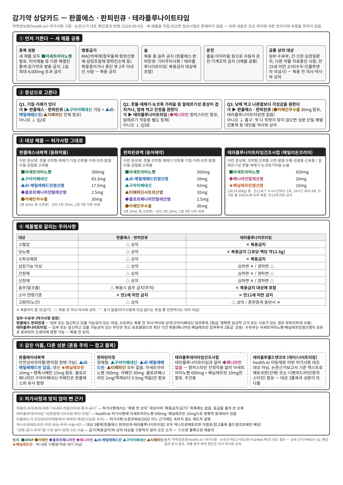
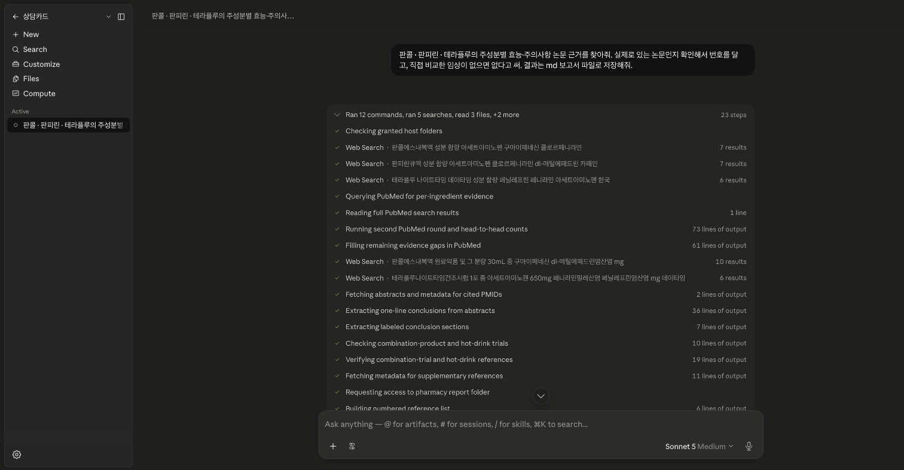
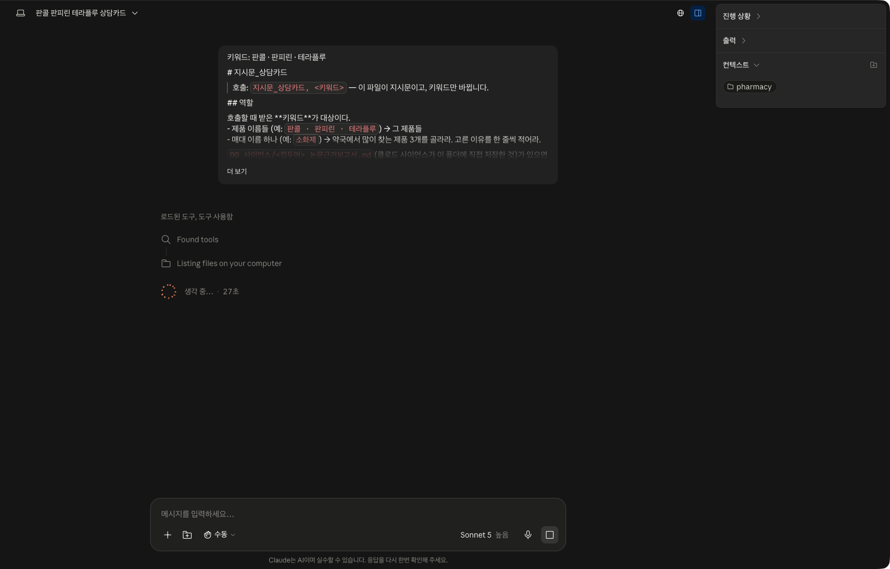
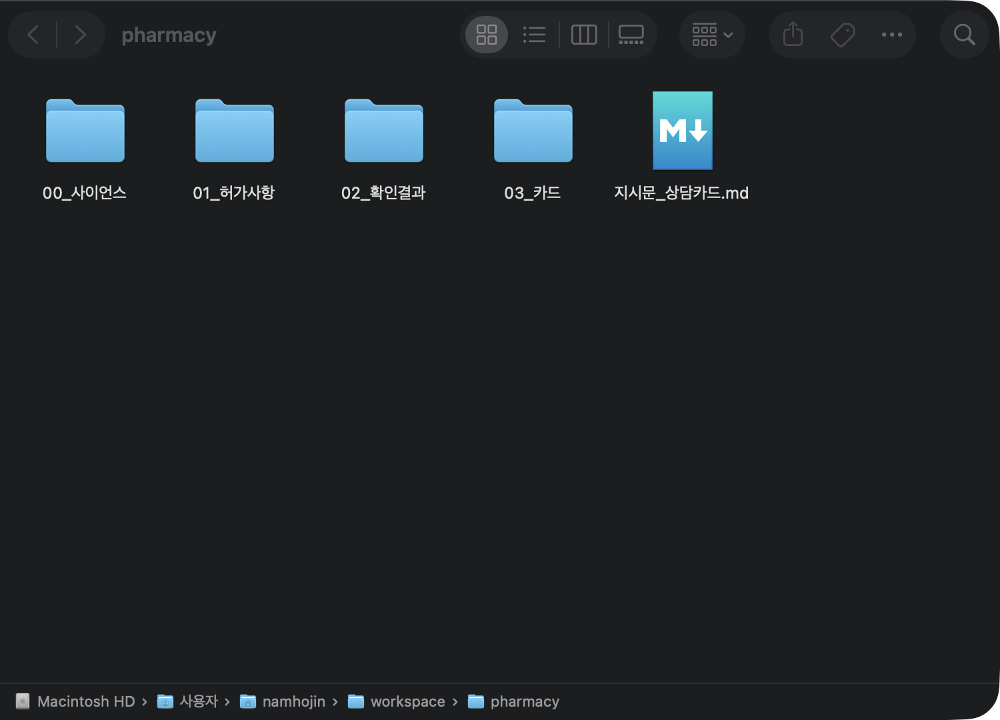
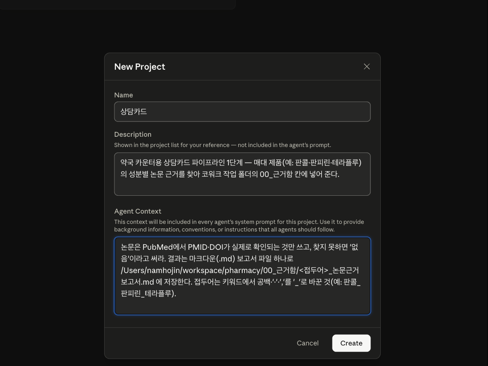

AI 분석비서
상담카드 한 장,
어디까지 AI에게 맡길 수 있을까?
논문을 찾고 허가사항과 맞춰 카드 한 장으로 만들기까지
파마브로스 심포지엄30분 · 처음 쓰는 분 대상
01
결과부터실측 2026-09-03
이 상담카드, AI에게 맡겨봤습니다
코워크가 만든 카드 · 판콜에스 · 판피린큐 · 테라플루
A4 1장약사용 참고 카드 · 환자 배포용 아님
8건허가와 안 맞아 뺀 근거 — 맨 아래에 이유와 함께
2번사람이 한 붙여넣기 — 나머지는 AI가
제가 한 건 약 이름 세 개와 붙여넣기 두 번
02
카운터매일 듣는 말
이 카드가 필요한 곳
손님“약사님, 이 감기약이랑 저 감기약이랑 뭐가 달라요?”
판콜에스성분 5가지아세트아미노펜 +
판피린큐성분 6가지아세트아미노펜 +
테라플루성분 3가지아세트아미노펜 +
⏱️1분뒤에 줄 선 채로 답해야 하는 시간
허가사항을 펼쳐 볼 수는 없습니다
그래서 카운터에 한 장
03
그런데실측 9/3 · 사이언스 보고서
근거를 찾았다고, 답까지 맞는 건 아닙니다
🤖 AI가 쓴 문장녹내장·전립선비대 환자
금기
≠
📜 허가사항녹내장·전립선비대 환자
복용 전 상의
51편논문은 전부 진짜
8건틀린 건 해석 — 문장만 보면 멀쩡
AI는 틀려도 자신 있게 말합니다
04
흐름이 그림 하나만
약 이름만 적으면, 카드가 나옵니다
💊
1 · 약사
약 이름을 적습니다
판콜 · 판피린 · 테라플루
비교하고 싶은 약 2개 이상
사람이 하는 일 ①
→
🔎
2 · AI
논문을 찾아 줍니다
진짜 있는 논문만 골라 보고서로 정리합니다
클로드 사이언스 · 약 12분
→
📋
3 · AI
허가 내용과 맞춰 봅니다
안 맞는 말은 빼고, 카드 한 장으로 만듭니다
클로드 코워크 · 약 19분
→
✅
4 · 약사
읽고 확인합니다
⚠ 표시된 곳은 원문을 다시 봅니다
사람이 하는 일 ②
사람이 하는 건 약 이름 적기와 마지막 확인, 둘뿐입니다
05
오늘의 도구이름 두 개만 기억
두 도구는 이런 물건입니다
06
사이언스실측 캡처 · 2026-09-03
사이언스는 이렇게 부릅니다
클로드 사이언스 · 보낸 프롬프트와 진행 단계

부르는 말 · 이대로 붙여넣기“판콜 · 판피린 · 테라플루의 주성분별 효능·주의사항 논문 근거를 찾아줘.
실제로 있는 논문인지 확인해서 번호를 달고,
직접 비교한 임상이 없으면 없다고 써.
결과는 md 보고서 파일로 저장해줘.”
⏱️12분→📄보고서 한 개가 폴더에 · 논문 51편
07
코워크실측 캡처 · 2026-09-03
코워크는 이렇게 부릅니다
클로드 코워크 · 지시문을 보낸 직후 · 작업 폴더 pharmacy

🔍
한 문장씩 맞춰보기
맞음 · 확인 필요 · 뺌
🗂️
카드 한 장 만들기
맞는 것만으로 A4 한 장
⏱️19분→🗂️카드 pdf + 확인 결과표
08
검증 결과실측 · 69문장
걸러진 것, 그리고 약사의 차례
맞음 15확인 필요 46뺌 8
녹내장 · 전립선비대 금기→허가는 “복용 전 상의”
데이타임 “함량 자료 없음”→허가에 650mg + 10mg 등재
덱스트로메토르판 서술 4건→세 제품엔 없는 성분
약사가 묻는 셋
💊제품이 정확한가
📜허가사항과 표현이 같은가
🗣️상담에 그대로 써도 되는가
⚠ 표시된 곳은 원문까지 열어 봅니다 — 싣을지 · 각주로 달지 · 뺄지는 약사가 정합니다
찾고 맞춰보는 데까지는 맡기고, 결정은 약사가 합니다
09
구성한 번만 · 15분
구성은 세 걸음이면 됩니다
두 도구는 서로를 부르지 못합니다 — 같은 폴더를 보게 하면 됩니다.
01
📁
작업 폴더 만들기
폴더 하나 만들어 코워크에 넘깁니다.
~/workspace/pharmacy

5분 · 한 번만
02
📝
지시문을 파일로
오늘 쓴 지시문을 글 파일로. 약 이름 자리만 비워 둡니다.
5분 · 한 번만
03
🔎
사이언스 프로젝트 + 지침
프로젝트 하나, 지침 두 문장 — 진짜 논문만, 저장은 폴더에.
클로드 사이언스 · New Project

5분 · 한 번만
10
다음부터형태 예시 · 리허설에서 실측 예정
다음부터는 약 이름만 바꿉니다
🔎 사이언스에 — 한 줄“베아제 · 훼스탈 논문 근거 찾아줘”
📋 코워크에 — 두 마디“지시문_상담카드, 베아제 · 훼스탈”
💊약 이름은 2개 이상 — 나머지는 프로젝트와 폴더가 기억합니다
사람 손은 약 이름 적기와 마지막 확인뿐
11
마무리가져가실 것
오늘 가져가실 건, 일을 맡기는 순서입니다
🔎찾고클로드 사이언스
→
📋맞춰보고클로드 코워크
→
✅결정약사
📦구성 파일 한 묶음 — wolsey37.github.io/study/symposium/consult-card-kit.zip (지시문 · 빈 폴더 · 사이언스 지침 · 오늘 결과물 견본 · 발표 후 업로드)
찾고 맞춰보는 데까지는 맡기고, 결정은 약사가 합니다
12